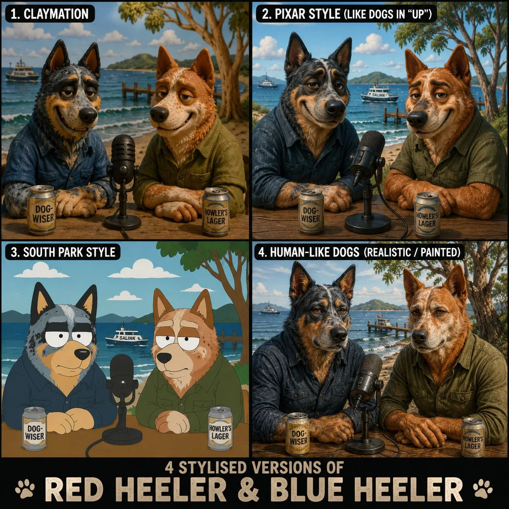

Pub philosophy / local radio gone rogue / regional anthropology
Two dogs sniff around civilisation.
This is a planning bench for a podcast where Blue Dog and Red Dog look at humans, culture, technology, stories, rituals and the strange behaviour of living things from a beach-table point of view.
Nothing here speaks for Luke or Angel. These are bits of scaffolding: rhythm ideas, source trails, famous dog references, dog rituals, recording tools and little prompts that can help a good yarn find its shape.

Show compass
A useful instinct: serious things can become trivial, and trivial things can turn serious.
The dogs are curious observers, not experts. A topic can begin as politics, weather, sport, AI, housing, music, food, a council sign, a ferry delay or a dog doing something deeply ordinary with suspicious confidence.
 Star page
Show Rhythm
Star page
Show Rhythm
Standing bits, recurring scenes, Good Dog, Bad Dog, News Flash and the rhythm pieces that can rescue a wandering yarn.
Weekly headlines Dog NewsDog-related headlines, grouped by source category and article date.
Reference bank Famous DogsReal and screen dogs for grounded segues, callbacks and little reminders that the hosts are still dogs.
Riff fuel Dog RitualsHabits and observations that make human behaviour look both ridiculous and strangely familiar.
Live tools Recording CockpitTimers, cues, scene cuts, notes and export tools for recording day or loose practice banter.
Markdown forms BuildersSmall forms that can turn a rough thought into Markdown without pretending the form is the show.
Blue Dog
Angel brings pace, riffing and social heat.
Blue Dog can chase a thought, tease the moment, fill space and keep the energy moving while leaving Red Dog clean openings to land a prepared thought.
Red Dog
Luke brings prepared insight and source-checking instinct.
Red Dog space keeps room for short observations, callbacks, practical meaning and source-checking notes.
Guests
Allies choose their own animal.
Guests choose their own spirit animal or creature character before the conversation. The site can record that choice after they make it; it does not choose for them.